As habilidades aparecem em atividades vividas, não apenas explicadas.
Vivências socioemocionais em grupo
Treinando habilidades socioemocionais de maneira divertida.
Um espaço acolhedor para crianças e adolescentes reconhecerem emoções, fortalecerem vínculos, viverem desafios em grupo e praticarem escolhas mais conscientes.
5 habilidades
1 universo próprio
Uma experiência autoral, lúdica e acolhedora
autoconsciência
autogestão
consciência social
relacionamento
decisão responsável
autoconsciência
autogestão
consciência social
relacionamento
decisão responsável
O projeto
Não é uma aula parada. É uma experiência vivida.
O Socializando foi pensado para transformar habilidades importantes em vivências possíveis: perceber o que sente, conversar com o outro, respeitar combinados, lidar com frustrações, cooperar e pensar antes de escolher.
A proposta acontece em grupo, com jogos, dinâmicas, rodas de conversa, desafios e atividades guiadas, em uma linguagem leve, prática e compatível com o universo das crianças e adolescentes.
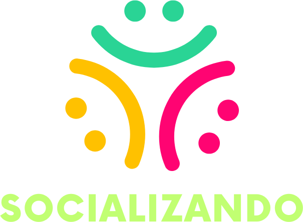
Por que faz sentido
A vida em grupo também se aprende.
O valor do projeto está em unir intenção técnica com uma experiência agradável, concreta e memorável.
Um espaço preparado para favorecer participação, vínculo e segurança.
Brincadeira, jogo e movimento a serviço do desenvolvimento.
Personagens, identidade própria e uma linguagem que faz sentido para o projeto.
As 5 grandes habilidades
Os personagens entram aqui com função clara.
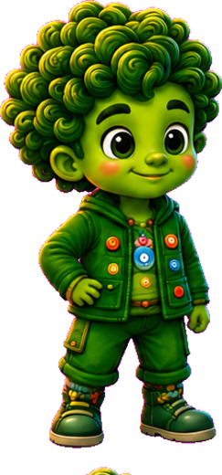
Autoconsciência
Perceber emoções, pensamentos e sinais internos com mais clareza.
Autogestão
Lidar com impulsos, frustrações, energia e desafios de forma mais regulada.
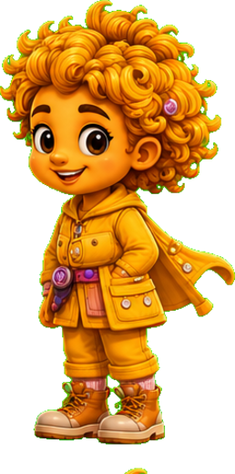
Consciência social
Ampliar empatia, leitura do outro e compreensão do contexto social.
Relacionamento
Praticar conversa, escuta, cooperação, vínculo e convivência.
Decisão responsável
Fazer escolhas com mais consciência, pensando em consequências e combinados.
Como funciona
A temporada é organizada como uma jornada.
Integração, regras, conversação, desafios, cooperação, expressão e devolutiva compõem uma sequência que dá ritmo e sentido à experiência.
Quebra-gelo, pertencimento, apresentação e combinados.
Dinâmicas, jogos e experiências que colocam as habilidades em movimento.
Conversação, autorregulação, cooperação, empatia e tomada de decisão.
Integração das vivências e devolutiva aos responsáveis.
Por dentro do Socializando
Um espaço vivo, preparado e cheio de possibilidades.
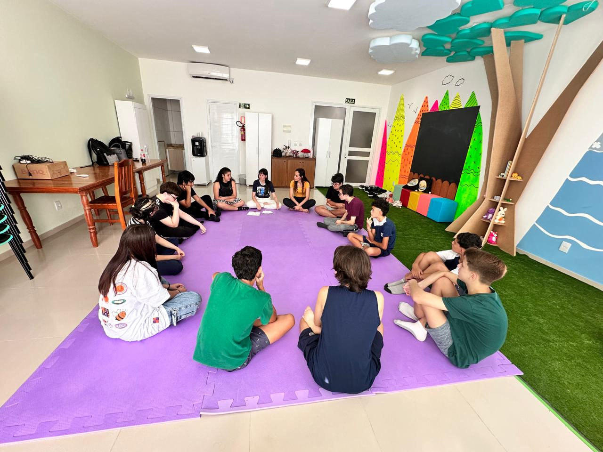
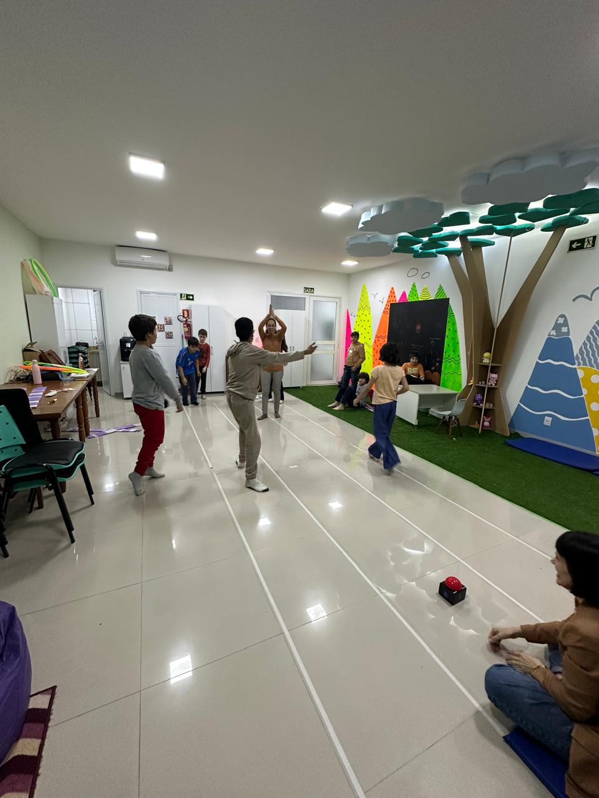
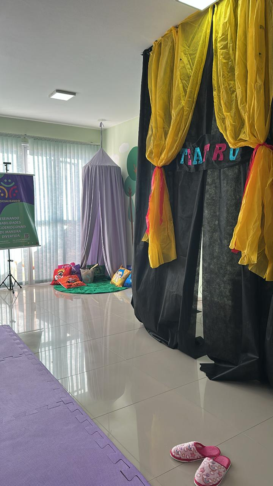
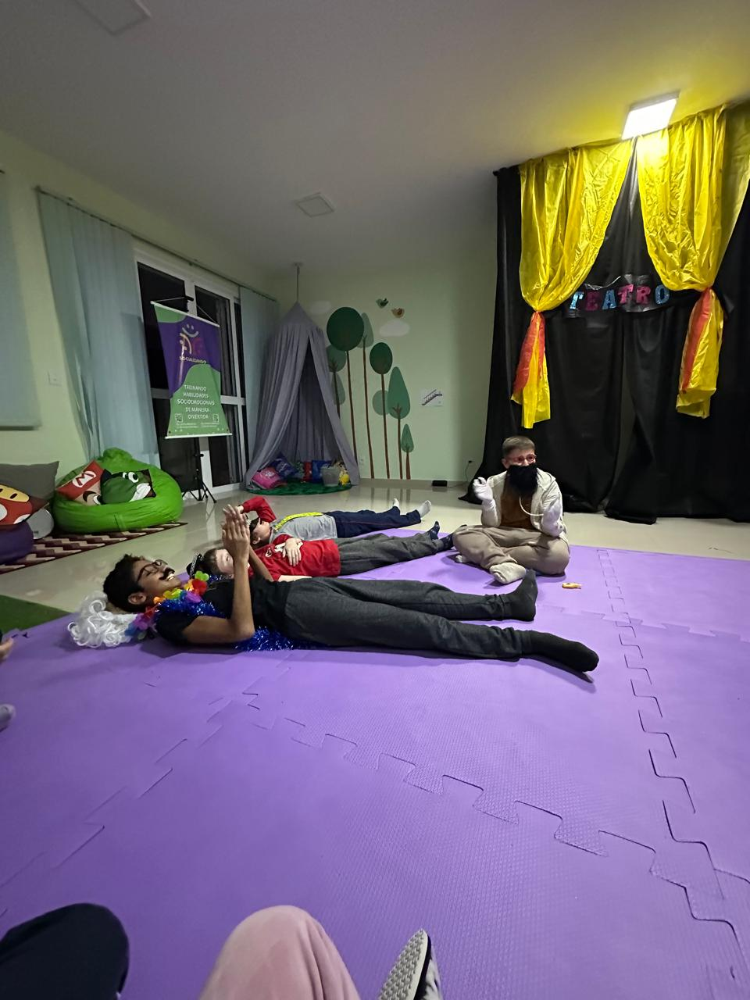
Em cena
As habilidades tem uma mensagem para você
Autoconsciência
Lumy
O que eu estou sentindo agora?
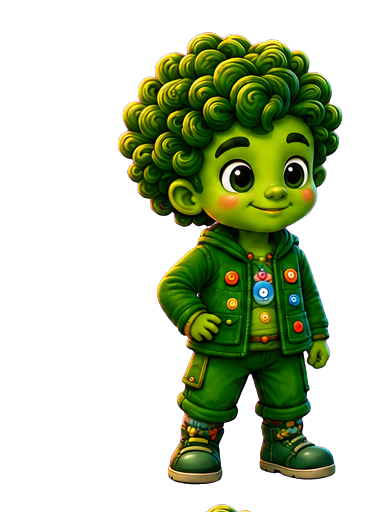
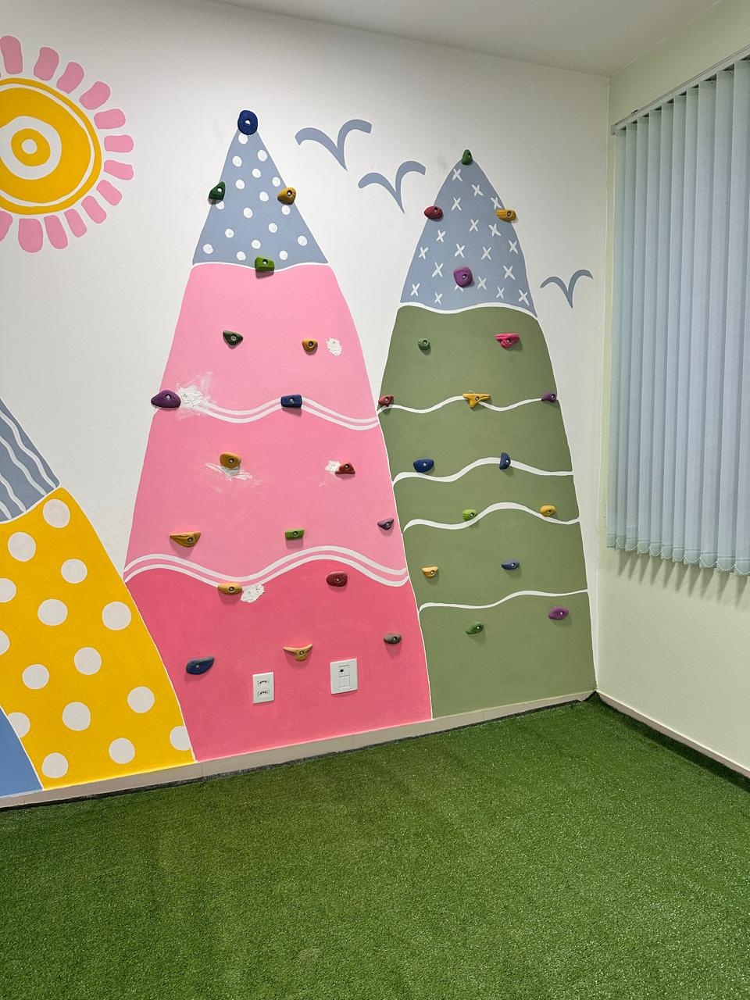
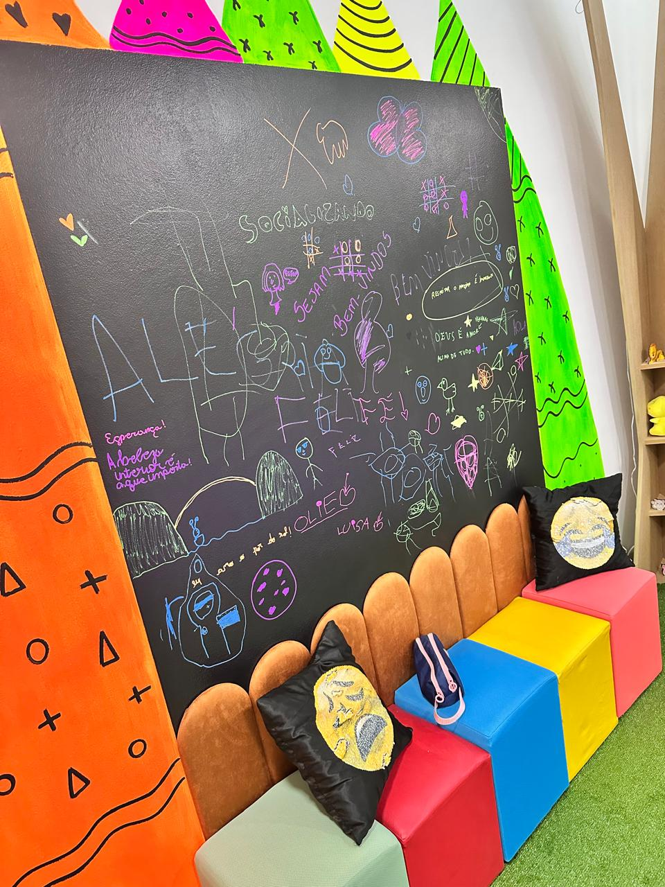
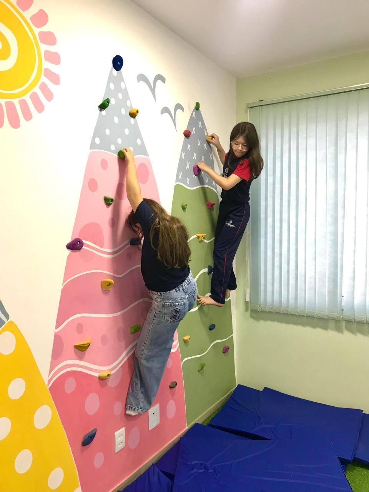
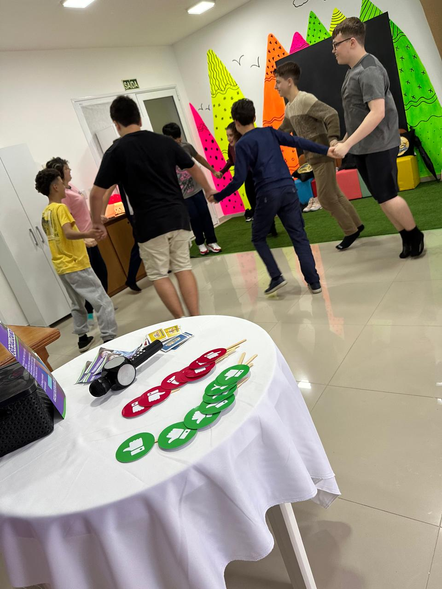
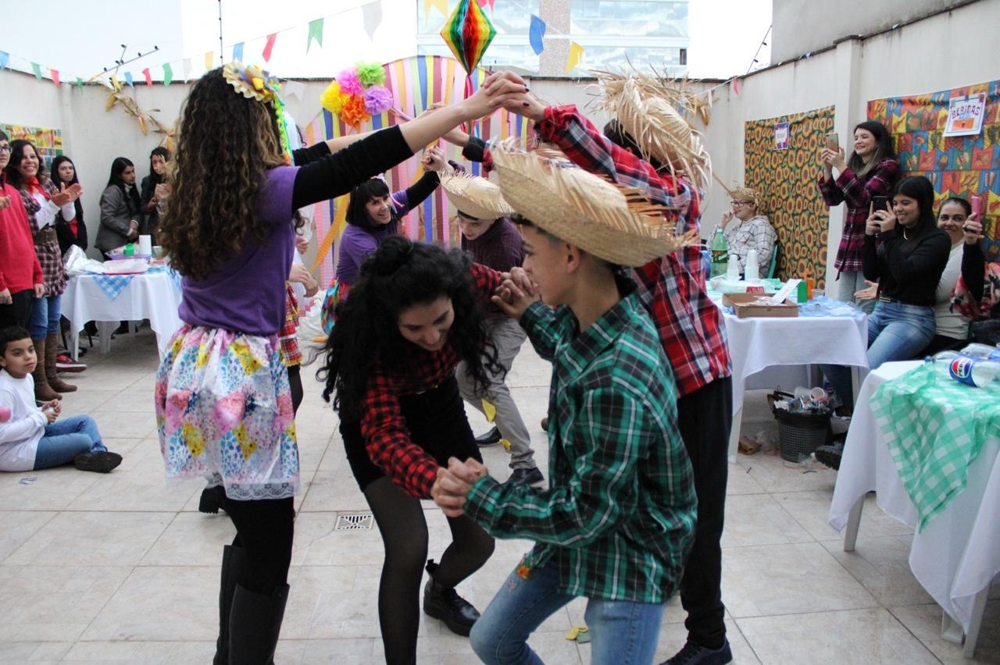
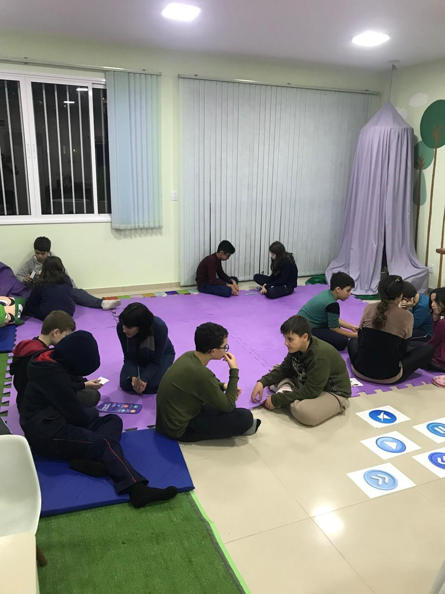
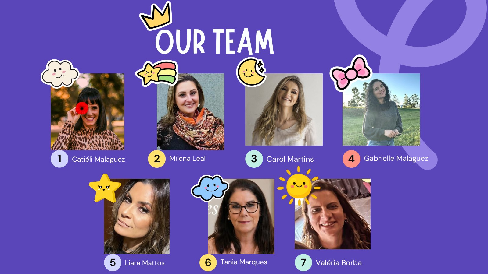
Equipe
Condução humana, presença e intenção.
O projeto se sustenta em uma equipe que acolhe, organiza, orienta e acompanha as vivências em grupo com sensibilidade e propósito.
Dúvidas comuns
O Socializando é terapia individual?
Não. É uma experiência em grupo com vivências socioemocionais. Quando necessário, a orientação para atendimento individual deve ser feita caso a caso.
Existe divisão por idade?
A composição dos grupos depende da maturidade dos participantes.
Quais habilidades são trabalhadas?
Autoconsciência, autogestão, consciência social, habilidades de relacionamento e tomada de decisão responsável.
Como recebo informações da próxima temporada?
O primeiro passo é chamar a equipe pelo WhatsApp. Os detalhes são passados diretamente no atendimento.
Próxima temporada
Quer saber se o Socializando faz sentido para teu filho?
Chama a equipe pelo WhatsApp e recebe as informações sobre grupos, idades, funcionamento e disponibilidade.